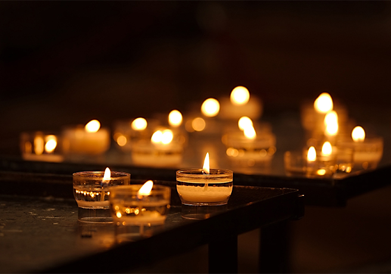

Concept-Story
"圧倒的空間" × "Italian"
キャンドル200コに囲まれた。
幻想的なセカイでイタリアンを。
タイセツなヒトと共に過ごす。
そんなクウカン。
Platsってナニ？
スェーデン語で”空間”をイミする。
ステキな体験はいつも通りじゃ生まれない。
オーナーがこだわり抜いた
幻想的な空間のなかで
イタリアンを楽しむ。

キャンドル200コ
を使用した
圧倒的な視覚体験
-Luz- ”るっつ” 。
スペインのコトバで”ヒカリ”。
大量のキャンドル
埋め尽くされる空間
イメージしきれない?
想像を超える。きっと

”美味しい”と”満腹”を。
量のカスタムは3つから。
至高の味覚体験を。
パスタを茹でる湯気は
キャンドルのヒカリを
じんわりと拡散する。
お腹が減ってくる。
詳しいMenu気になる??
右をクリックすると,,

オーナー激選 jazz
粋で”自由”
そんな聴覚体験。
jazzが流れている。
実はjazzには楽譜はなくて、
演奏者の気分で、、色々と。
知ってた？？
次の”音”はなんだろうかって
考える。
ワクワク。

タイセツなヒトと
キャンドルに囲まれた温もりあるヒトトキ。
ゆったり? まったり?
まあ,たまには色々忘れて。
ゆっくり過ごしていきましょう。

お客様へ
-コロナ対策-
事前フォームでの体温測定等
ご協力をいただいております。
店内は常に換気されております。
スタッフ一同、皆様のご来場を心よりお待ちしております。